|
The image below shows the IntAct homepage, the starting point for most users. As an example, the protein lsm7 will be investigated.
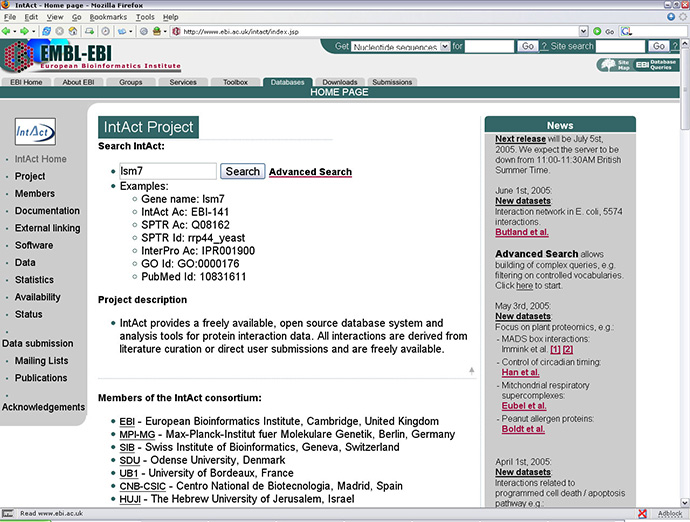
The output above shows that there are three entries in the IntAct database for proteins that have lsm7 in their name (second column from
the left) and would appear to be
orthologues. On the right, next to the protein name is the IntAct Accession number. To get the next page I clicked on "EBI-141".
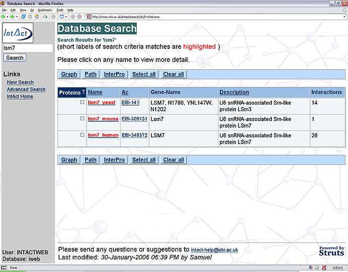
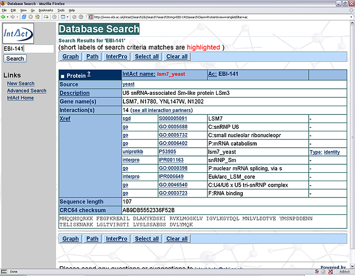
The page above shows a variety of information about the protein lsm7_yeast. On the right of the name is the IntAct Accession number.
Below that is the source organism, a brief description of the putative protein function and any alternative gene names (in this case,
there are none). Below that is a list of alternative gene names for the protein and count of the number of interactions the protein
participates, at the current time then are a number of cross-references (Xref) to entries in other databases. First there is a link to the entry
for lsm7 in the Saccharomyces Genome Database (SGD) followed by a number of Gene Ontology IDs which describe the protein (GO). Remember
Gene Ontology is hierarchical and some Gene Ontology IDs represent very general descriptions of function. For more information about
Gene Ontology click
here. The other two
links are for
UniProtKB
and
InterPro. UniProtKB (Universal Protein
Resource - Knowledgebase) is a protein databank for proteins sequence and function and InterPro displays information regarding protein families,
domains and functional sites. Also featured is the protein sequence and the number of amino acids it.
To see what proteins lsm7_yeast interacts with I clicked on "see all interaction partners" to get the next page.
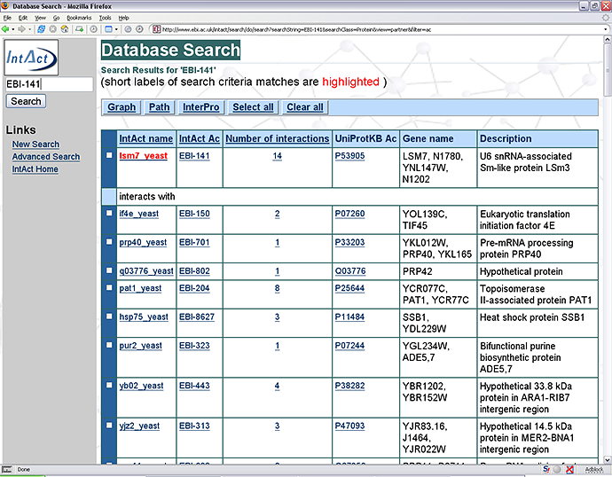
The page above shows a list of the proteins that interact with lsm7_yeast. Note that the
Number of interactions
refers to the number of experiments which feature the given protein and not the number of proteins with which the given protein has been
shown to interact with. It is possible to get a graphical representation of the interaction network with lsm7 by ticking the box next to
lsm7_yeast, this will be shown later. To see the experiments which feature lsm7 I clicked the
14
to get the following page.
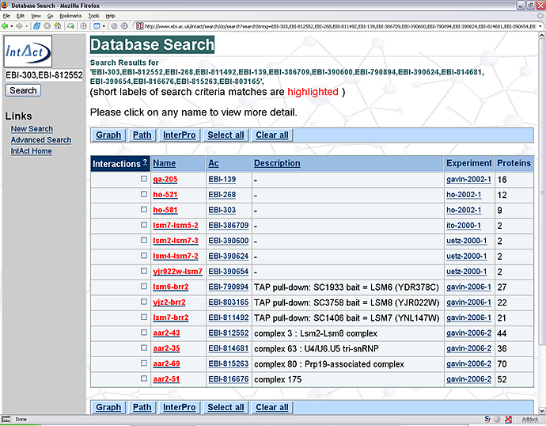
The page above shows the seven experiments that feature lsm7_yeast. A brief summary is shown including a description and the
total number of proteins reported from the experiment. To look at one Experiment I clicked on ga-205 to get the next page
(clicking on EBI-139 would also go to the same page)
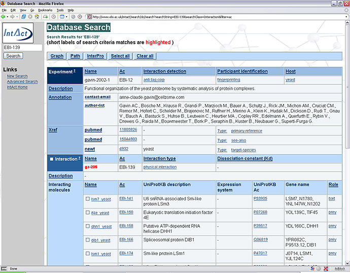
In the Experiment sections, the details are given including the experimental procedure used to detect the interaction (Interaction
identification) and identify the protein involved (Participant identification). Both of these have links that give a description of the
method, the PSI-MI ID and a link to a PubMed reference which consists of a relevant article that explains the technique (see below).
The Xref links refer to the published article from which the data has been produced.
The Interaction section gives the IntAct name for the experiment and the IntAct ID (in this case ga-205 and EBI-141 respectively). The
type of interaction is given with a link to another page that gives a definition and the corresponding PSI-MI ID.
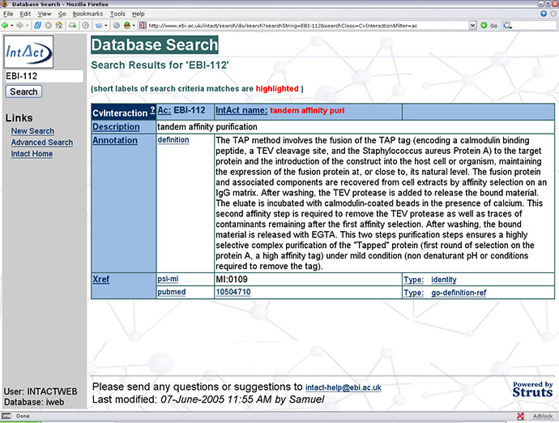
To access the page below, I clicked on the Xref pubmed link 10504710. The page below shows the PubMed entry for the article that explains
experimental technique, “tandem affinity purification”, used to investigate proteins interactions.
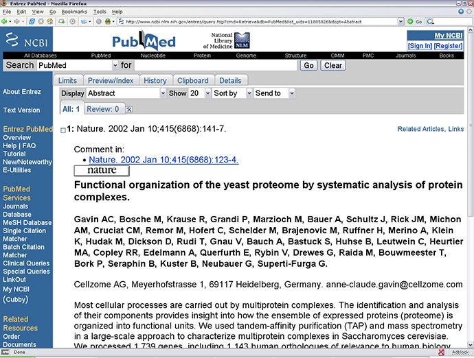
Returning back to the experiment page for ga-205 (or EBI-139), note that each experiment reports on multiple interactions. Thus many
interactions belong to the experiment gavin-2002 (EBI-12) but each interaction (in this case EBI-139) refers to only one protein (in
this case lsm7_yeast) as bait for investigating interaction partners.
To view the interacting partners of lsm7_yeast using a network visualization tool tick the box next to "Interaction" and click
on "Graph" to get the page below.
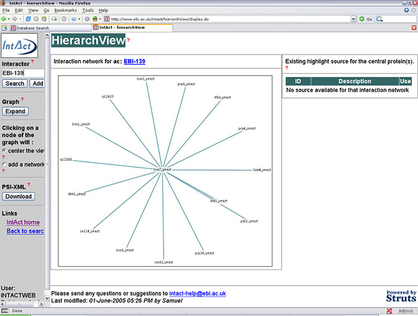
HierachView shows an interaction network using nodes to represent individual proteins and inter-connecting lines to show interactions.
The network can be expanded by selecting "center the view" in the left hand side frame and clicking on a node (protein). I
clicked on the node lsm4_yeast (~10 o'clock on the network above) to expand the network and give the page below.
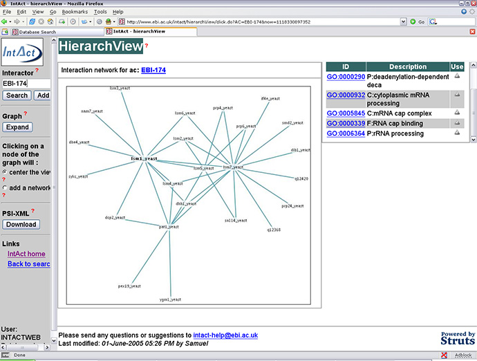
The result in an expansion of the network into a more complicated network by adding more interactions stored in the database. On selecting
a protein (lsm4_yeast) the corresponding Gene Ontology IDs are given in the right hand side column. These Gene Ontology IDs describe the
protein properties. For more information about Gene Ontology click
here
or visit the gene ontology database
http://www.godatabase.org. Interaction
network data can be downloaded and viewed in a third party network visualisation program. There are many such programs available, for a
list and further information click
here.
To download the data that produces the HierachView graph simply click on the "Download" button under "PSI-XML" to get
a page similar to that below.
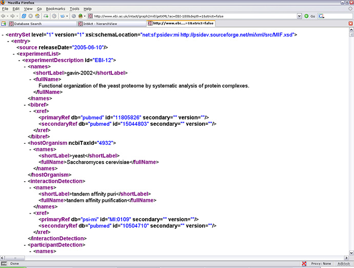
The page above shows the data from IntAct in
XML
format called
PSI-MI.
PSI-MI which was developed in collaboration with the Human Proteome Organisation (
HUPO
)
to enable the exchange of molecular interaction data using XML.
To save the IntAct data
* Using
Firefox
File / Save Page As / - ensure "Save type as " is selected as "XML Document" / Save
* Using IE
File / Save As... / - ensure "Save as type:" is selected as "XML file (*.xml)" / Save
|